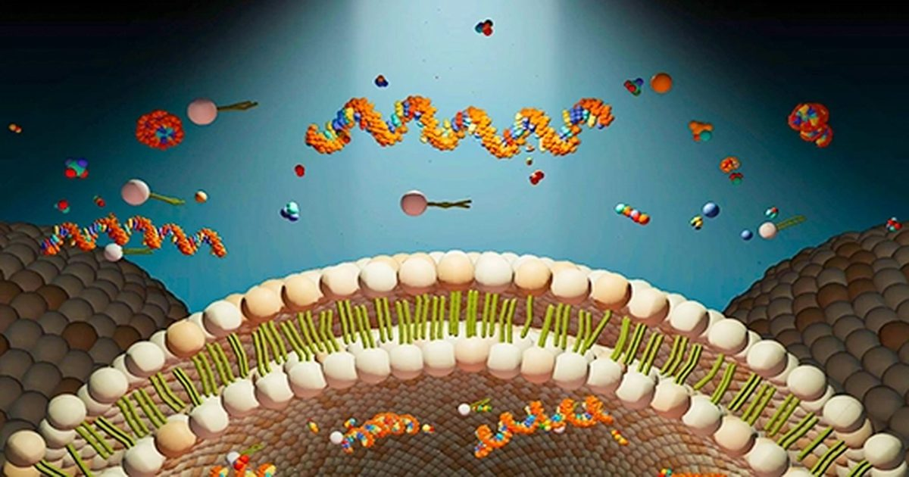

Как химия стала биологией: новая глава в истории происхождения жизни
Ученые всё чаще отказываются от идеи о единственной «первой молекуле» жизни, переключая фокус на изучение самоорганизующихся химических систем. Новый интердисциплинарный подход объединяет генетику, пребиотическую химию и синтетическую биологию, чтобы понять, как неживое вещество начало эволюционировать миллиарды лет назад.
От «первичного бульона» к эксперименту Миллера-Юри
В 1952 году студент Стэнли Миллер поставил опыт, ставший точкой отсчёта современной пребиотической химии. В стеклянном аппарате он смоделировал раннюю атмосферу с метаном, аммиаком и водородом, а также «океан» нагретой воды, через которую пропускал электрические разряды — аналоги молний. Уже на следующий день в колбе обнаружили тёмный осадок, содержащий пять аминокислот — строительных блоков белков. Это доказало: органические молекулы могут возникать спонтанно в небиологических условиях.
Результат Миллера перенёс вопрос о происхождении жизни из области философии в экспериментальную науку, что оценили современные исследователи. Органический химик Раманараянан Кришнамуртти назвал опыт сменой парадигмы, а синтетический биолог Кристоф Данелон подчеркнул: впервые глубокий вопрос стал доступен лабораторным методам. Однако далее область десятилетиями фокусировалась на поиске конкретных молекул-предшественников, упуская системный взгляд.

Революция ДНК и застой гипотезы «РНК-мира
В 1953 году, вскоре после публикации Миллера, Уотсон и Крик описали структуру ДНК, сместив фокус на генетику. Учёные стали искать «первую молекулу», способную хранить информацию и катализировать реакции. Открытие рибозим — РНК-молекул с ферментативной активностью — в 1980-х годах укрепило популярную гипотезу «РНК-мира»: предполагалось, что РНК одновременно выполняла обе роли, запуская эволюцию до появления белков и ДНК.
Стратегия выделения одной «главной» молекулы привела к десятилетиям споров между сторонниками РНК, липидов, белков и метаболитов. Химик Мэттью Пауэр называет это классической ошибкой: поле застряло в ожидании, что найденная молекула сама запустит саморепликацию. Астрофизика Бетюль Качар считает такой кризис полезным: именно в такие моменты происходят настоящие прорывы, заставляя ученых пересмотреть базовые предпосылки.

Новый взгляд: системы вместо отдельных молекул
Современное поколение исследователей отказывается от догмы «единственного предка» в пользу изучения сетей реакций. Эксперименты показывают: предшественники биомолекул образуются легко при условиях ранней Земли, но сложнее объяснить, как хаотичная химия превратилась в устойчивую эволюционную линию, сохраняющуюся миллиарды лет. Ключевая задача — понять механизмы передачи информации, достаточно точные для наследования, но несовершенные для адаптации.
Наука движется по трём конвергентным путям: биологи восстанавливают древние гены, «проталкиваясь» назад от современной жизни; химики создают сложные смеси, моделируя движение вперёд от неорганики; синтетические биологи объединяют подходы, конструируя новые биологические системы, которых не было в природе. Такой синтез инструментов позволяет задавать вопрос не только «что такое жизнь», а «что жизнь делает» — в древнем мире, в пробирке или за пределами атмосферы.
Что делает жизнь: от Архея к лаборатории
Смена парадигмы означает уход от статичного определения жизни к функциональному. Жизнь — это процесс, способный удерживать сложность и передавать её через поколения на меняющейся планете. Исследователи изучают, как химические циклы обретают способность к саморегуляции и передаче информации без заранее заданного генетического кода.
Такой подход стирает границу между неживым и живым, рассматривая происхождение жизни как непрерывный переход от геохимии к биохимии. Синтетические биологи уже создают протоклеточки с метаболизмом и делением, не имеющие аналогов в современной биосфере. Эти модели помогают понять, какие принципы универсальны, а какие — случайны, и расширяют представления о том, где ещё в космосе может возникнуть жизнь.
Перспективы: кризис как движитель науки
История изучения происхождения жизни демонстрирует: периоды застоя и ожесточённых споров предшествуют качественным скачкам. Отказ от догмы «одной молекулы» открыл путь к системному мышлению, где химия и биология работают как единый инструментарий. Новые экспериментальные методы позволяют проверять гипотезы, которые раньше оставались чисто теоретическими.
Будущее области — в объединении генетического «проталкивания назад» с химическим «движением вперёд» и синтезом искусственных систем. Такой подход не только приближает ответ на вопрос о нашем происхождении, но и меняет само понимание того, что такое жизнь — не как зафиксированный набор молекул, а как устойчивый динамический процесс, способный возникать при определённых условиях.
От теории к практике: что меняется в подходах
Классические учебники часто противопоставляют «химическую» и «биологическую» стадии abiogenesis. Современные данные показывают, что это разделение условно: уже на стадии сложных смесей наблюдаются признаки отбора и наследования на молекулярном уровне. Эволюция начинает действовать задолго до появления первых клеток.
Практический вывод для науки — необходимость работать с гетерогенными популяциями молекул, а не с чистыми реакциями. Лаборатории внедряют микродиффузионные камеры, высокопропускное секвенирование и моделирование на суперкомпьютерах, чтобы отслеживать динамику тысяч взаимодействующих компонентов одновременно. Это меняет методологию всей пребиотической химии.
Коротко: Наука о происхождении жизни перешла от поиска «первой молекулы» к изучению самоорганизующихся химических систем. Интердисциплинарный подход объединяет генетику, химию и синтетическую биологию, рассматривая жизнь как функциональный процесс, а не набор веществ.
Как по-вашему, можно ли когда-нибудь полностью воссоздать в лаборатории путь от неорганики к живой клетке, или принципиальный разрыв между химией и биологией сохранится?